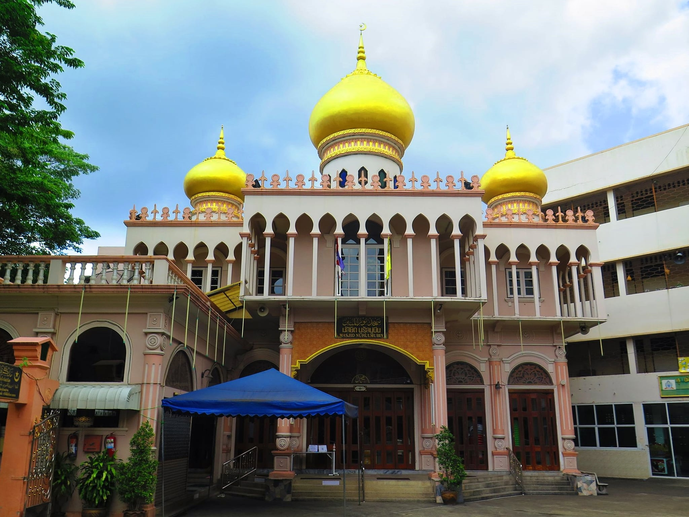
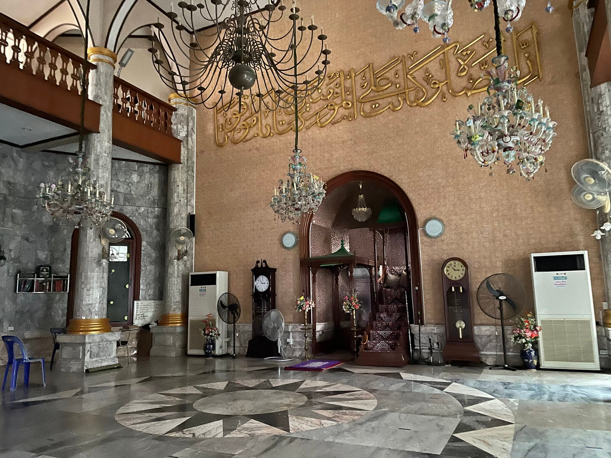
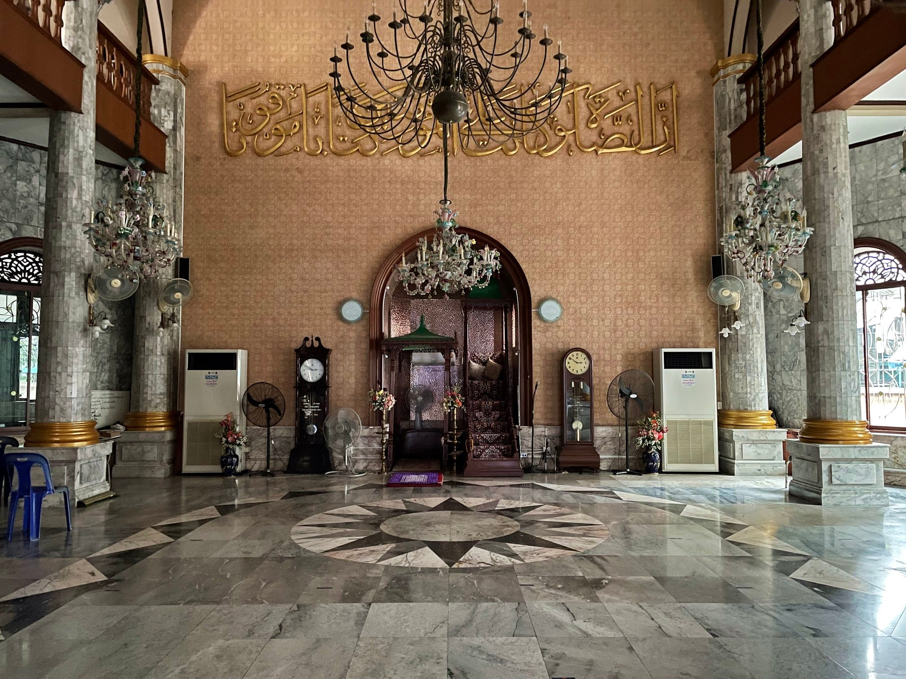
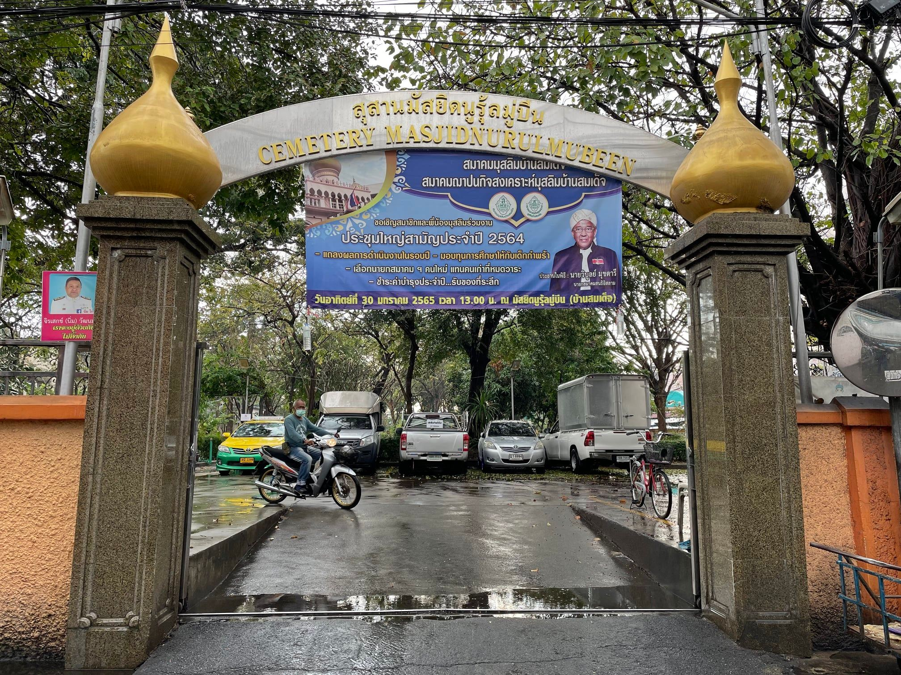
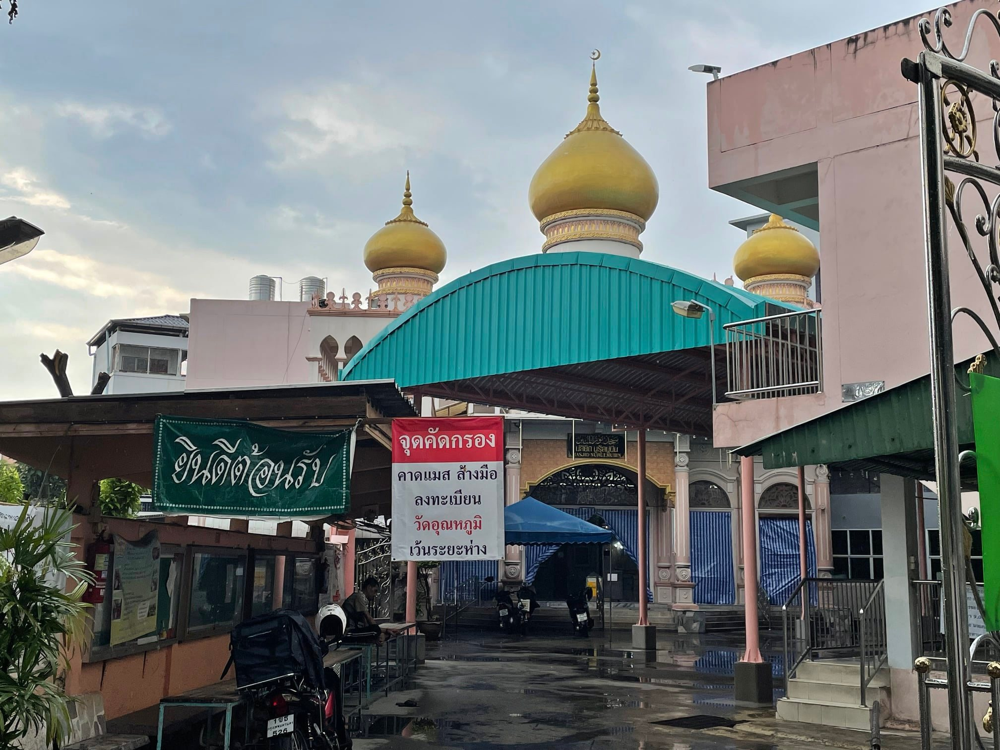

มัสยิดนูรุ้ลมู่บีน (บ้านสมเด็จ) Nurul Mubeen Mosque – บ้านแขก ธนบุรี กรุงเทพมหานคร

ประวัติความเป็นมาของชุมชนบ้านแขก
ย่านสี่แยกบ้านแขกเป็นหนึ่งในพื้นที่ที่สะท้อนความหลากหลายทางวัฒนธรรมของกรุงเทพมหานครได้อย่างชัดเจน ที่นี่เต็มไปด้วยร่องรอยทางประวัติศาสตร์และการอยู่ร่วมกันของผู้คนต่างศาสนา จนบางครั้งได้รับการขนานนามว่าเป็น “ชุมชนเจ็ดความเชื่อ” เนื่องจากมีผู้นับถือศาสนาพุทธ จีน คริสตัง คริสเตียน อิสลาม ฮินดู และซิกข์ อาศัยอยู่ร่วมกันอย่างกลมกลืนมาอย่างยาวนาน
การตั้งถิ่นฐานของชุมชนมุสลิม
ชุมชนมุสลิมในย่านบ้านแขกมีรากฐานจากชาวมุสลิมในกรุงศรีอยุธยาที่อพยพลงมาหลังการเสียกรุงศรีอยุธยาครั้งที่สอง ต่อมาในสมัยรัชกาลที่ 4 ยังมีชาวมุสลิมจากปัตตานีเข้ามาตั้งถิ่นฐานเพิ่มเติม ตามการเชื้อเชิญของสมเด็จเจ้าพระยาบรมมหาศรีสุริยวงศ์ (ช่วง บุนนาค)

การก่อสร้างมัสยิดนูรุ้ลมู่บีน
เดิมทีชุมชนมุสลิมในพื้นที่มีเพียงบาแลหรืออาคารไม้ชั้นเดียวสำหรับประกอบศาสนกิจและสอนอัลกุรอาน ซึ่งตั้งอยู่บริเวณตรงข้ามวัดหิรัญรูจี
การก่อสร้างอาคารถาวร
ในปี พ.ศ. 2450 ชุมชนมุสลิมร่วมกับสมเด็จเจ้าพระยาบรมมหาศรีสุริยวงศ์ได้สร้างมัสยิดเป็นอาคารปูนแทนที่อาคารไม้เดิม การก่อสร้างใช้เวลานานกว่า 7 ปี โดยงานปูนเป็นฝีมือช่างชาวจีน ส่วนงานไม้และงานตกแต่งเป็นผลงานของช่างมุสลิม
การบูรณะหลังสงครามโลกครั้งที่ 2
หลังสงครามโลกครั้งที่ 2 อาคารบางส่วนของมัสยิดได้รับการปรับปรุงใหม่ โดยในปี พ.ศ. 2497 ได้มีการรื้อถอนอาคารส่วนหน้าและสร้างขึ้นใหม่เป็นโครงสร้างคอนกรีตเสริมเหล็ก แล้วเสร็จในปี พ.ศ. 2500 พร้อมกับการตั้งชื่อภาษาอาหรับว่า “นูรุ้ลมู่บีน” ซึ่งมีความหมายว่า “แสงสว่างแห่งความบริสุทธิ์”

สถาปัตยกรรมและความสำคัญทางวัฒนธรรมของมัสยิด
มัสยิดนูรุ้ลมู่บีนมีเอกลักษณ์จากการผสมผสานศิลปะหลายวัฒนธรรม ทั้งอิทธิพลสถาปัตยกรรมตะวันตก งานปูนปั้นบนหลังคาที่มีลักษณะคล้ายศิลปะเวเนเชียนโกธิค และโดมทรงหัวหอมสีทองจำนวน 3 ยอด ตัวอาคารใช้โทนสีชมพูสลับขาว ซึ่งชวนให้นึกถึงสถาปัตยกรรมยุคโมกุลของอินเดีย ทำให้มัสยิดแห่งนี้มีความโดดเด่นและเป็นหนึ่งในแลนด์มาร์กสำคัญของย่านบ้านแขก

มัสยิดนูรุ้ลมู่บีนในปัจจุบัน
ในปัจจุบันมัสยิดยังคงเป็นศูนย์กลางทางศาสนาและชุมชนของชาวมุสลิมในย่านบ้านแขก และได้รับการบูรณะดูแลอย่างต่อเนื่อง นอกจากนี้ยังมีการก่อสร้างหลังคาโดมขนาดใหญ่บริเวณลานด้านหน้า เพื่อรองรับกิจกรรมของชุมชนและป้องกันแดดฝน

วิสัยทัศน์ของมัสยิด
- เป็นศูนย์กลางการปฏิบัติศาสนกิจของชุมชน
- ส่งเสริมการศึกษาและคำสอนของศาสนาอิสลาม
- สร้างความสามัคคีในชุมชน
- เป็นพื้นที่แห่งสันติภาพและความเข้าใจระหว่างศาสนา
โครงสร้างบุคลากร
นายสมชาย ใจดีมาก
ผู้นำศาสนา
นายอับดุลลา หามา
ผู้ช่วย
นายอาเหม็ด งงมาก
ฝ่ายกิจกรรม